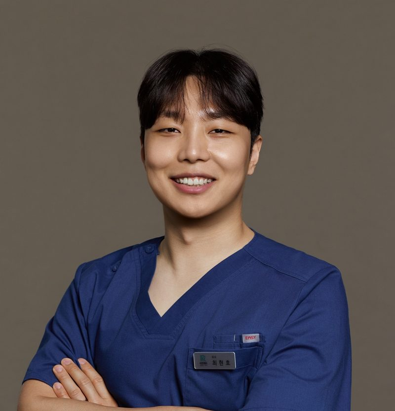

There are so many dermatology clinics in Apgujeong. Where should you go for treatment?
Search for an Apgujeong dermatology clinic and you will find endless, near-identical advertising. Here are the things worth checking yourself before treatment, because advertising alone will not tell you.

This column is a translation of an article originally written in Korean by Reyeonk Clinic.
Apgujeong has a dense concentration of dermatology and plastic surgery clinics. Plenty of choice is an advantage, but it also makes comparison hard.
Even under the same treatment name, the equipment, products, technique and consultation process differ from clinic to clinic. Choosing by treatment name and price alone can lead to a disappointing experience. Results vary from person to person, so it is worth checking whether the clinic gives you an explanation that fits you.
If a clinic's name or location changes often, it is hard to follow up on your treatment history and progress. Check whether it has been practising in the same place for a long time.
Find out whether the consultation is handled by a coordinator and the treatment by someone else. What matters is whether a doctor examines your skin, consults with you and treats you personally.
Check that the clinic does not only stress results, but also explains the reactions that can follow treatment, precautions, and cases where a treatment may not suit you. If a clinic pushes you to commit quickly to a number of sessions or a package, it is worth comparing once more.
See whether the clinic answers clearly when you ask about the type of equipment and whether products are genuine. How it responds to your questions is also a useful sign.
Treatment does not end on the day. Check in advance whether the clinic follows up on your progress and whether there is a channel to ask questions if something bothers you.
These are general points you can use as a reference when comparing clinics.
Price is certainly important. But even for treatments with the same name, the number of shots, product volume, technique and aftercare differ between clinics.
When comparing the total cost, also ask what is included and when extra charges apply. Knowing this makes it easier to compare a cheaper clinic with a more expensive one.
Reyeonk Clinic has been practising for more than 17 years, since opening in 2009.
From consultation through treatment to wrap-up, the doctor sees you personally.
Before deciding on a treatment, we first look at your skin condition and concerns, and explain which treatments may be needed and the cases where they may not suit you. Which treatment is right depends on the individual, so we recommend coming in for a personal consultation.
At Reyeonk Clinic, Dr. Lee Doochan and Dr. Kim Hyunsu (Representative Directors) and Dr. Choi Hyunho proceed only after a personal consultation. Their backgrounds are as follows.
Former Director, Mayfure Clinic (메이퓨어의원) · Former Director, Jaylin Clinic (제이린의원) · Former Director, Mimisum Clinic (미미썸의원)
AestheFill APAC Expert (2026) · SHENB Virtue RF Key-doctor · Restylane Kysse™ MASTER · SOMA (Thermage) Certification of Training, Advanced Course completed · Atiere Key-doctor
Regular member, Korean Society for Laser, Dermatology and Trichology (대한레이저피부모발학회) · Regular member, Korean Society for Aesthetic Plastic and Laser Medicine (대한미용성형레이저의학회) · Regular member, Korean Society for Obesity and Aesthetics (대한비만미용학회) · Regular member, Korean Filler Society (대한필러학회)
Academic Director, Korean Academy of Cosmetic Surgery (KACS) (대한미용외과학회) · Developer and patent holder of the Sunsak injection (순삭주사)
Cynergy MPX Key Doctor · Harvest Jet 2 (Body Jet EVO) Training Doctor · Smartlipo TPX · Cellulaze Asia Training Doctor
Former Director, Mayfure Clinic (메이퓨어의원) · Former Director, Tones Clinic (톤즈의원)
Regular member, Korean Society for Laser, Dermatology and Trichology (대한레이저피부모발학회) · Regular member, Korean Society for Aesthetic Plastic and Laser Medicine (대한미용성형레이저의학회) · Regular member, Korean Society for Obesity and Aesthetics (대한비만미용학회) · Associate member, Korean Filler Society (대한필러학회)
Full backgrounds are on the doctors page.
Ranking your priorities, such as sagging, wrinkles, skin texture or pores, makes the consultation much more specific.
Your treatment history helps in choosing a treatment and the interval between sessions.
Mentioning your schedule and pain sensitivity in advance lets the clinic advise accordingly.
Check how long it has operated, who handles everything from consultation to treatment, how the consultation explains things, whether equipment and products can be confirmed, and how aftercare works.
Yes, a consultation alone is fine. We recommend getting consultations at several clinics and comparing them.
No. Effects and satisfaction vary from person to person, depending on skin condition and the treatment.
A good clinic shows itself in the consultation, not in the advertising.
If you are unsure which Apgujeong dermatology clinic to choose, come and talk with the doctor in person at Reyeonk Clinic. From consultation through treatment to wrap-up, the doctor sees you personally.
* This article is provided for general information. Treatment results vary from person to person. Please decide on diagnosis and treatment through a consultation with a medical professional.